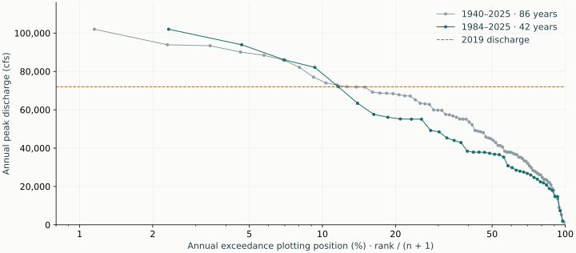

RUSSIAN RIVER / RESEARCH NOTE 02 / SEPTEMBER 23, 2026
Check the flood history
before trusting house depths.
The gauge record is usable for a first look at flood frequency. The transfer from gauge stage to water at this property remains unvalidated.
2019 is our first reality check
The atlas’s original county 45-ft scenario gives 8.79 ft of water over the selected road point. The newer Russian River–Mark West service gives 8.47 ft there. Changing service versions alone does not resolve the discrepancy.
The reported experience at this property is water under the house without living-floor flooding; owner confirmation and an elevation certificate are pending. The road-depth prediction is also disputed. These observations have not yet established an observed water elevation.
No floor adjustment, depth correction, or calibration has been applied to force a match.
What we have verified
| Evidence | Result | Meaning |
|---|---|---|
| Johnsons Beach / Guerneville stage | 45.38 ft in February 2019 | This is the stage used for the historical map preset. |
| Hacienda Bridge peak flow | 72,000 cfs in the current USGS record | NOAA’s historical table lists an estimated 85,300 cfs. The difference requires reconciliation before using any stage–flow pairing. |
| Road point, lidar elevation | 37.26 ft NAVD88 (2022); 37.36 ft (2013) | Agreement at this point makes a terrain-vintage difference alone an unlikely explanation for an 8–9 ft discrepancy. |
| County scenario terrain | Original metadata identify 2015 lidar | The atlas reconstructs water elevation using 2013 terrain; original model terrain and water-surface output are still needed. |
Road sample: 38.46657722, −123.00774390. County depths are direct ImageServer pixel queries, independent of the atlas’s reconstructed water elevation. A 45-ft scenario is near the 45.38-ft crest; it is not a hindcast of the event.
First pass: how often did flows reach the 2019 magnitude?
The current USGS annual-peak archive contains one discharge maximum for every water year from 1940 through 2025 at Hacienda Bridge (11467000). The most recent complete water year is used; 2026 is excluded. We count years with a maximum at least 72,000 cfs.

| Water years | Years reaching threshold | Observed annual fraction | 95% binomial interval* |
|---|---|---|---|
| 1940–2025 | 11 / 86 | 12.8% | 6.6–21.7% |
| 1984–2025 | 5 / 42 | 11.9% | 4.0–25.6% |
*Exact Clopper–Pearson intervals assume independent years with a constant exceedance probability. They describe sampling uncertainty under that assumption, not changes in climate, reservoir operations, gauge ratings, or hydraulics. This is an event-based descriptive comparison; the threshold was selected from the 2019 event.
The 1984 start follows the onset of Lake Sonoma regulation in October 1983. Earlier flows combine different regulation periods; Lake Mendocino regulation began in 1958. Neither period is a fully homogeneous estimate of future risk. These frequencies concern Hacienda discharge, not interior flooding, road flooding, or a 45-ft Guerneville stage.

The curves use rank/(n+1) plotting positions; the table uses k/n observed fractions, so their percentages differ slightly. Connecting lines guide the eye. No fitted 100-year estimate or extrapolation is provided.
Why stage probabilities are not shown yet
Hacienda Bridge (11467000) and Johnsons Beach (11467002) are different locations, with different gauge references. The map’s Guerneville stage corresponds to Johnsons Beach. We must not use Hacienda’s long stage record as if it were the same gauge.
The retrieved Johnsons Beach daily-maximum series has substantial gaps in 2008–2024; 2025 has 363 valid daily maxima. We have not established whether all missing periods are low-flow seasonal gaps. Missing observations are not counted as dry days or complete flood-free years. A separate coverage audit precedes any annual stage-exceedance estimate.
Independent evidence to follow
The Army Corps’ 2018 report PR-100 identifies high-water marks on the Rio Theatre in Monte Rio for 1986, 1995, 1997, and 2006 (pp. 106–108, Table 22). It reports observed elevations of 42.9, 41.4, 39.1, and 39.9 ft respectively. The table does not explicitly identify its vertical datum. These are at a different location from the property; we will verify the datum, mark locations, and longitudinal water-surface slope before comparing elevations.
Those marks were used to calibrate the Corps model. They are observations worth retrieving, but agreement in that table is not an independent validation of the fitted Corps model. Their independence from the county model’s calibration is also unestablished.
A published 2019 inundation study used the county 45-ft model map as its comparison extent because independent floodplain observations were limited. Its agreement with that map cannot validate the county map itself.
Next checks, in order
- Confirm the 2019 waterline at the road, gate, and under-house posts; photos or a recognizable maximum-water mark would locate it best. Combine this with the certificate’s floor elevation and datum.
- Recover the county’s gauge–flow pairing, original 2015 terrain, water-surface profiles, boundary conditions, and calibration documentation. Reconcile the 2019 discharge discrepancy.
- Put historic high-water marks and the property on the same vertical reference, then test several flood events. Preserve disagreement instead of changing the floor to fit the model.
- Only after that check, translate gauge exceedance into property-depth probabilities. Evaluate El Niño conditioning with sample-size uncertainty. A new HEC-RAS model should use verified channel/bathymetry and bridge geometry, with some events held out for validation.
Sources and reproducible data
- USGS annual-peak archive: Hacienda Bridge · retrieved September 23, 2026.
- USGS Johnsons Beach 2019 stage · Hacienda flow and stage.
- NOAA CNRFC historic crests · USGS station history and regulation.
- Original county scenario · Newer county scenario.
- USACE PR-100, hydraulic calibration · Bowers et al. (2022), 2019 flood-map comparison.
Archived source responses and analysis scripts are retained in the research workspace. No annual living-floor flood probability or insurance recommendation is supported by this first pass.